← Zuruck →
ICELAND
Laugavegurinn
[34 mile route. Roughly 2-4 days in length, some resupply huts along the way]
Looks like it goes through a lot of volcanic locations along the way. Many many waterfalls, super green! Iceland is definitely a geologically young island so, I expect the only vegetation you'd be finding there would be young and close-cropped.. still, the trail is relatively unpopulated, so, it seems like it'd be a mix of green and black and blue and... ahhhhh!
 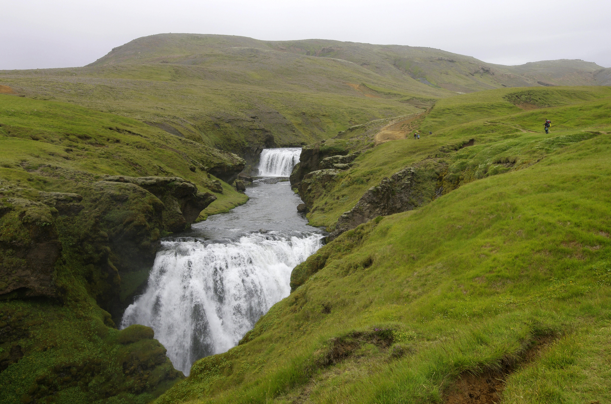
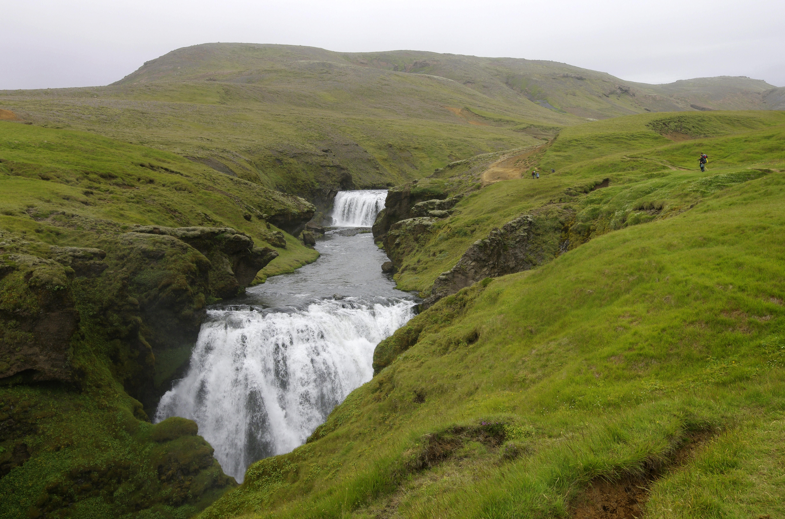

 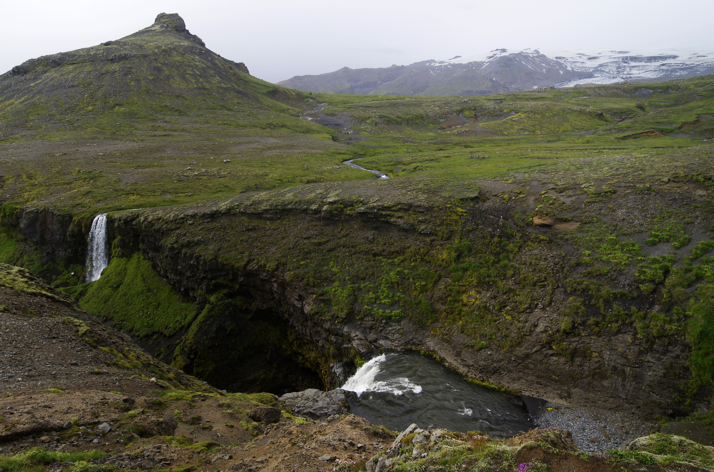
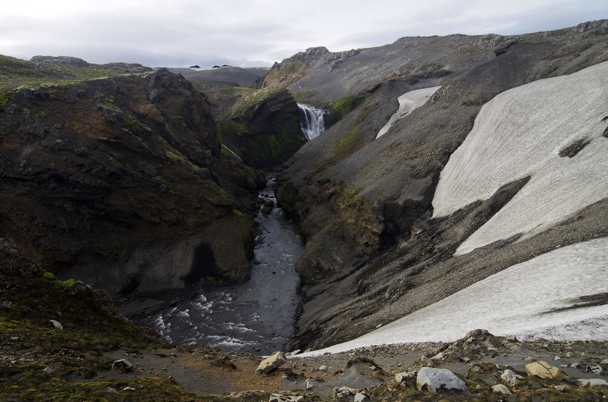
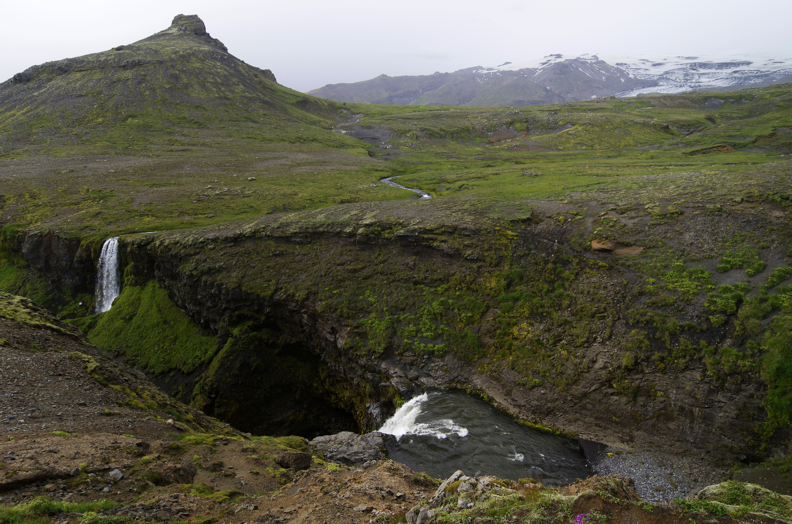
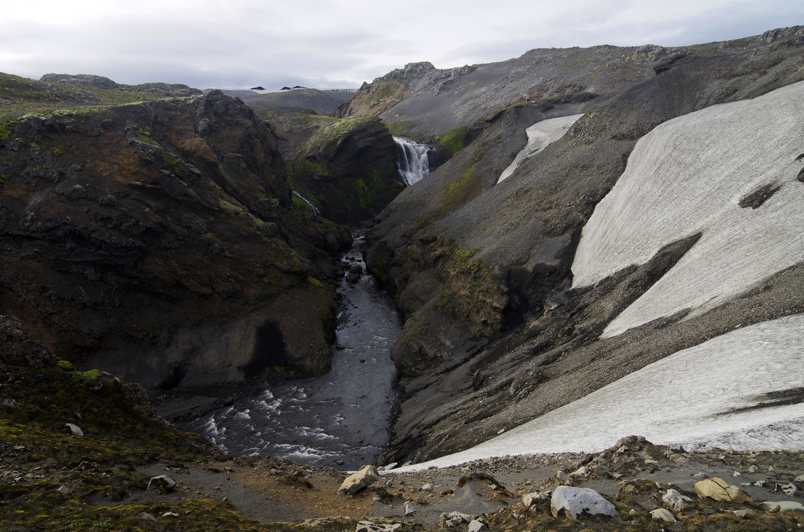

Hornstrandir
[Variable route (undefined path/freestyle)... variable length as well, likely less than a month]
This is a route on the northernmost Icelandic peninsula, Hornstrandir.. it is utterly hiker-defined, however the nature of Icelandic terrain allows for a huge range of options as far as this! It's dangerous for sure, as there is no infrastracture in place to defend against potential injuries, which, means... well, I give you a hopeful smile that I can join you on it :)
It is a place to enjoy solitude and silence – a place where you actually notice the sound of a bird’s wings, the wind, the trickle of a stream or the hum of a very distant boat engine. Other than Iceland’s desert interior, Hornstrandir is the best place to feel completely alone on the Earth.
https://www.northernadventures.co/return-to-hornstrandir


GREENLAND
Arctic Circle Trail
[Kangerlussaq to Sisimut -- ~100 miles, 7-12 days in length]
Hiking trail north of the Arctic Circle!! Looks relatively undocumented, so will likely be similar to Hornstrandir in nature of being a 'freestyle' hiking trail, but has both a summer and winter hiking path (definitely summer haha) (no winter yet)... heads from some of the inner Greenlandic ice sheets to the west coast Atlantic ocean (specifically from the town of Kangerlussuaq to Sisimiut, about 102.5 miles)... if done during the summer there should be hardly any snow
Caution: apparently midgies and flies on this trail during the summer are enough to drive a person insane, be wary
https://expertvagabond.com/arctic-circle-trail-greenland/
https://arcticcircletrail.net/

 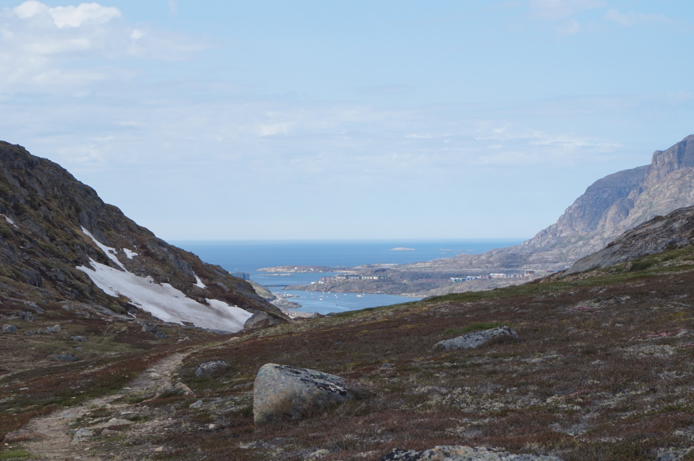
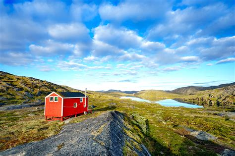
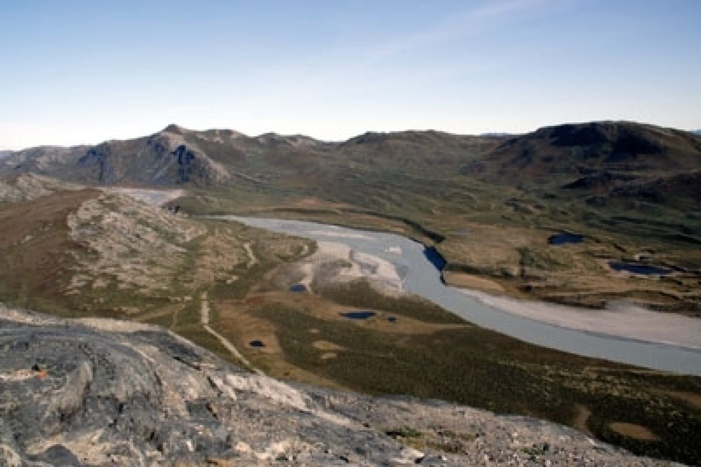
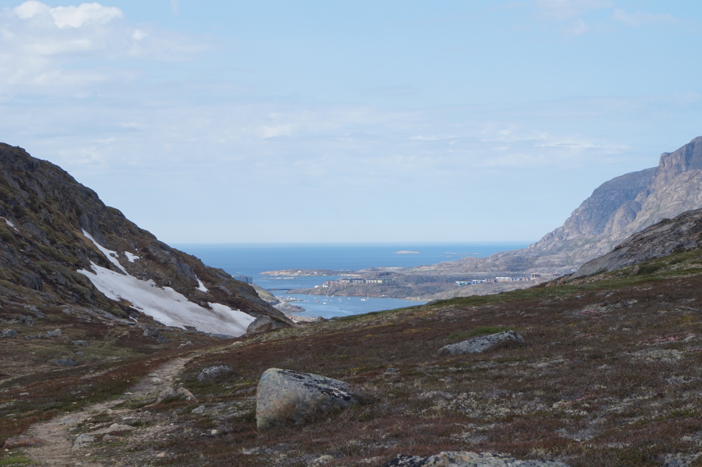
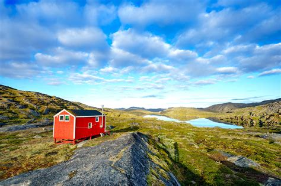
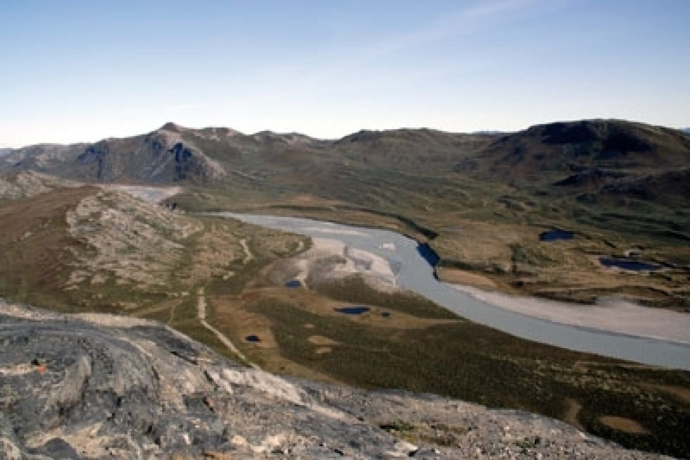


CANADA
The Great Divide Trail
[Continental Divide between Albera & BC, 1100 kilometers -- ~1 month]
This is a trail in the Canadian Rockies, on the Continental Divide between Alberta & British Columbia... self-proclaimed one of the most 'spectacular and challenging long-distance trails on the planet' (claim unverified so far :) )... the trail follows a similar concept to the European long-distance routes or the Oregon Coast trail, as it does not have a defined route, speficially. It certainly is however a very popular hike in Canada (okay, as far as long distance trails go), seems to be like Canada's PCT or AT. Plus. It looks gorgeous :)
http://www.greatdividetrail.com/
https://fordingriver.wordpress.com/
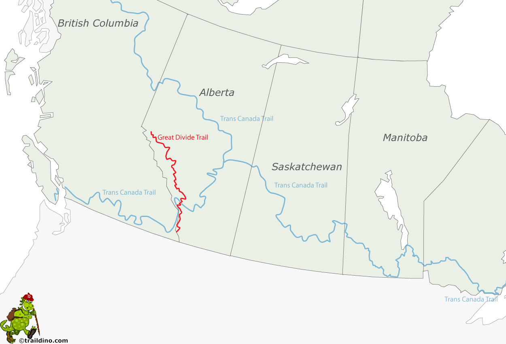 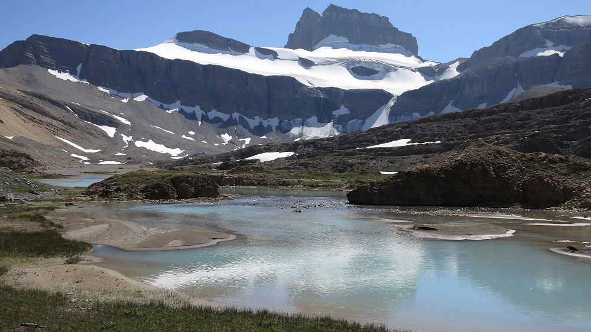 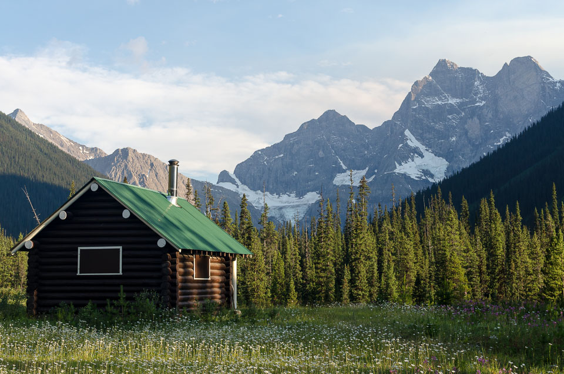
 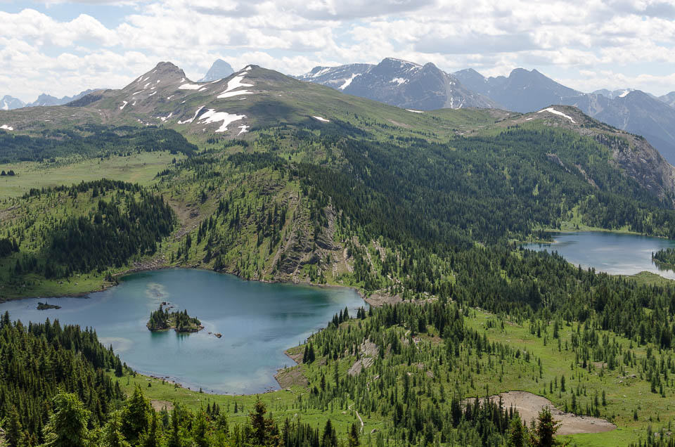
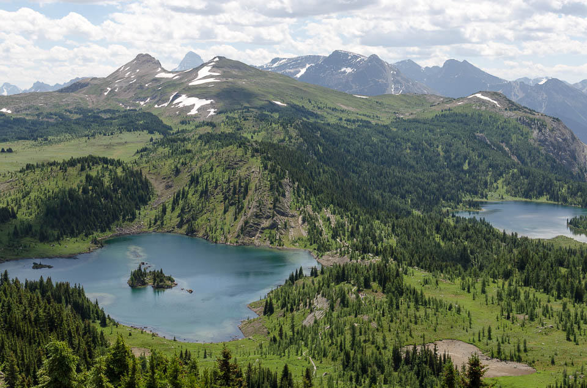